Hướng dẫn tính năng mới của DALSP HD cho người mới bắt đầu
Contributor: Mai Nguyễn a.k.a Tokisaki Rinkai
Date A Live – Spirit Pledge HD là bản làm lại của DALSP cũ. Xin lưu ý bản game hiện tại còn rất nhiều lỗi và sẽ được chỉnh sửa nhiều trong thời gian tới,
cùng với rất nhiều tính năng chưa ra hết. Bài guide này sẽ chỉ điểm qua những tính năng mới quan trọng của bản làm lại này.
1. Giao diện chính
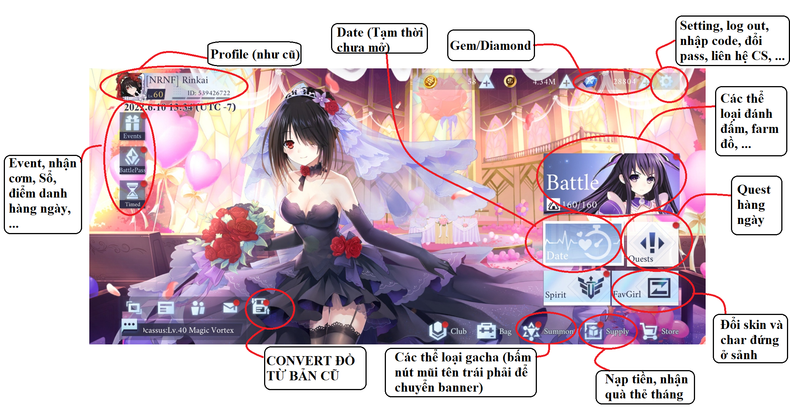
2. Convert tài nguyên cũ
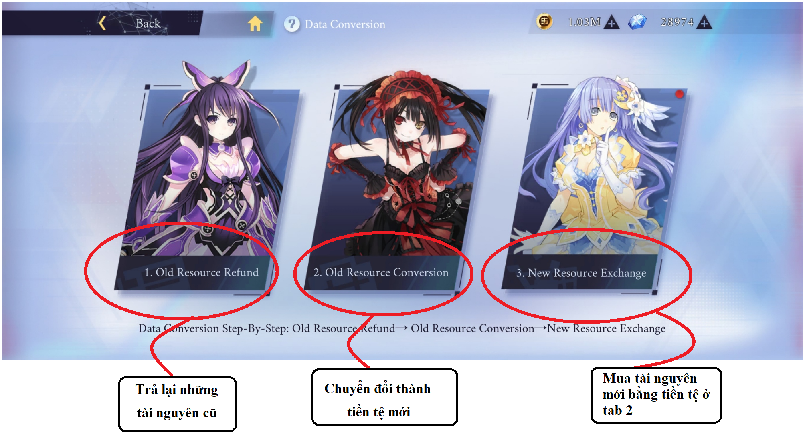
Ở tab 3 thì đừng nên mua hết một lượt, Shop convert không giới hạn thời gian nên cứ từ từ, thiếu gì mua mấy.
Tuy nhiên nhớ vét thật nhiều
 nhé, Gem food 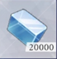 thì sắm cỡ 10 lần bấm max là đủ, còn Gemstone dùng gì mua nấy. Nhớ mua đủ 4 màu về mà lắp
nhé, Gem food 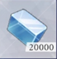 thì sắm cỡ 10 lần bấm max là đủ, còn Gemstone dùng gì mua nấy. Nhớ mua đủ 4 màu về mà lắp
3. Nuôi char:
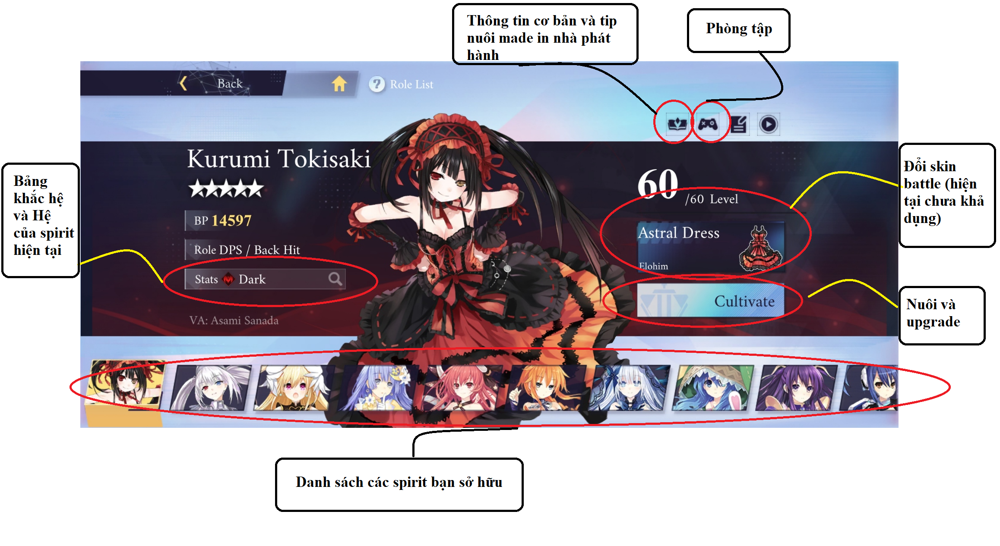
Hiện có một số Spirit có chữ này: 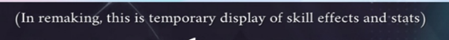 ở góc trên bên phải (ở phía trên level) nghĩa là Sephira của em đó chưa có hiệu ứng buff, chưa cập nhật chỉ số, Cung mệnh chưa có gì, và Skill tree đang bị khóa. Các bạn vẫn có thể vào nghịch, tuy nhiên khuyến cáo là do các lí do vừa nói trên nên mấy ẻm đang rất yếu, không nên vác ra thực chiến rồi nói lời cay đắng.Chúng ta sẽ đi qua từng tab:
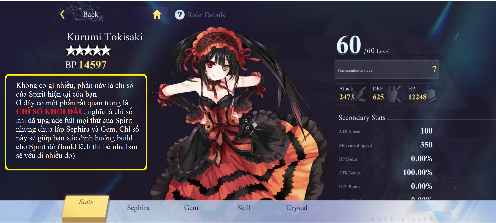
Đây là tab stat, nhớ để ý chỉ số khởi đầu, ví dụ trông như thế này: 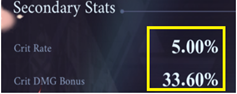 có nghĩa là bé yêu nhà bạn nên build crit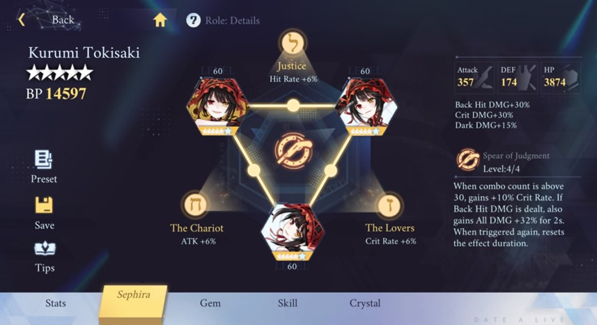
Sephira thì cũng giống hồi trước, tuy nhiên giờ effect từng seph sẽ khá đơn giản (nhiều khi chỉ có 1 dòng)Effect set của sephira giờ sẽ mạnh lên khi bạn up star từng seph một trong set đó
Hệ thống link và cung của seph vẫn còn, tương tự hồi trước
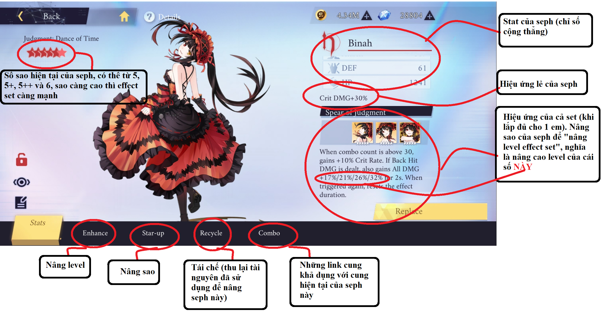
Khi bạn bấm vào từng seph lẻ, trông nó sẽ như thế này. Kinh nghiệm khi muốn nâng level hiệu ứng set thì nên nâng sao cho Sephira dàn trải (3 em 5+ sẽ cho level cao hơn 1 em 6* và 2 em 5*)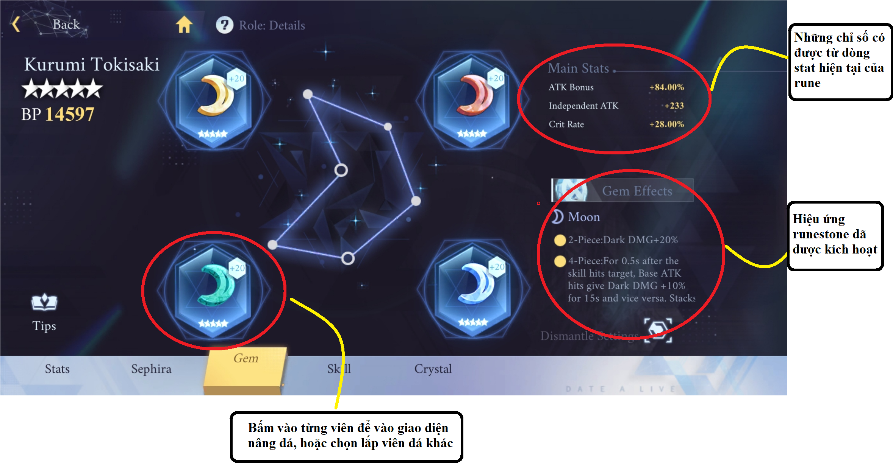
Bài chi tiết về hệ thống Runestone và hướng dẫn tẩy rune đã có trên group, mời các bạn tìm đọc. Giàu nghèo sướng khổ mạnh yếu gì phân hóa ở đây là chính, nên cố gắng đầu tư vài bộ rune ngon nghẻ tí rồi mới ngẩng mặt làm người được. Mà ở thời điểm hiện tại thì chỉ cần up full sephira, skill, gem, crystal là đã có thể có bp trên 13k rồi, nên bạn nào build xong mà vẫn lẹt đẹt dưới 10k thì cúi cúi mặt xuống nhé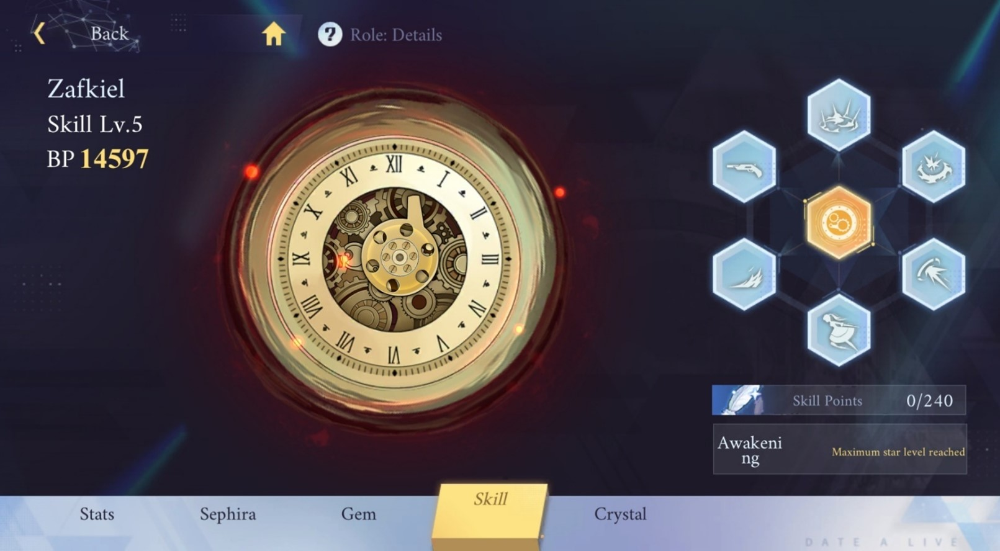
Chỗ này là cây skill, nguyên liệu lấy từ những đá kaballah cũ ( 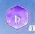 ), cứ 2000 đá cùng loại là sẽ vừa đủ để full 4 nhánh skill, tương đương 240 lông skill. Bạn có thể click vào bất kì ô nào trong 7 ô lục giác để vào giao diện nâng skill tree, cũng như xem các chỉ số, hiệu ứng skill và scale skillNếu thiếu đá nâng skill, bạn có thể vào shop để mua bằng 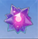 , roll nhiều cũng sẽ được tặng đá này, hoặc vào Bag bán đá cũ còn dư cũng được
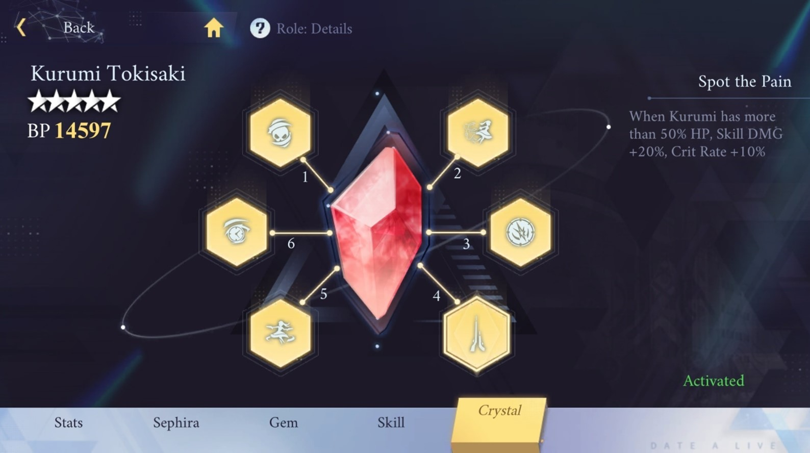
Giao diện này là “Cung mệnh”, hay “Talent” char. Miễn bạn đã mở khóa 1 ô, thì hiệu ứng đó sẽ luôn luôn có trên Spirit của bạn, không mất đi cũng không thể xóa hay tháo bớt.Mỗi ô cung mệnh sẽ yêu cầu 60 mảnh char ( ) để mở. Bạn bắt buộc phải mở theo thứ tự ô từ 1 đến 6.
4. Cơ chế Gacha mới
- Giờ đây các story mode chỉ còn để trang trí và vét gem. Những vol từ Miku Lily về trước (Vol 6 về trước) sẽ còn cho mảnh những char 4* tương ứng từng vol, còn mảnh char 5* các bạn bắt buộc phải roll mới có.- Trong bản mới, sẽ không còn rank char (sss, ss, ex, …) mà sẽ chỉ còn char 4* (những char vốn là rank ≤ Aa) và char 5* (những char vốn là S và SS). Có 3 ngoại lệ là Natsumi, Tsang và Kuroko gốc là char S nhưng sang đây sẽ là unit 4*
- Banner mới vẫn sẽ có bảo hiểm 10 nháy chắc chắn ra 1 unit 4* trở lên (không tính banner roll friend badge)
a, Heat banner:
- Giờ không còn chia 2 loại là char và seph nữa mà gộp làm 1, gọi chung là normal banner và luôn luôn mở
- Bảo hiểm cũ: 80 roll/char, 50 roll 1 seph → Bảo hiểm mới: 70 roll/1 unit 5* (vẫn giữ chế độ 50% trúng rate, 50% lệch rate)
b, Limited banner (char):
- Bảo hiểm cũ: 100 roll/1 char → Bảo hiểm mới: 70 roll/1 unit 5* (50% trúng rate, 50% ra seph/char rác, giống heat summon cũ nhưng giờ lượng rác sẽ nhiều lên)
- Rate cũ: 0,8% → Rate mới: 0,6% (tương đương với 0,3% trúng rate, 0,3% ra rác). Sau 56 roll mà chưa trúng rate, mỗi lần roll tiếp theo sẽ được +7,2% rate (cộng dồn). Rate sẽ reset về 0,6% nếu roll được unit đang rate up, hay còn gọi là trúng rate. “Bảo hiểm” vẫn áp dụng luật 50/50 như heat summon cũ
- Nếu đến khi đạt bảo hiểm mà vẫn thua 50/50 (tức là bảo hiểm 70 roll có ra 5* nhưng vẫn lệch rate), thì chắc chắn unit 5* tiếp theo bạn roll ra sẽ trúng rate
c, Limited banner (seph):
- Bảo hiểm cũ: 3 seph trùng/1 seph tự chọn → Bảo hiểm mới: 30 roll/1 unit 5*, không còn chế độ đổi 3 lấy 1
- Rate cũ: 3,6%/1 seph → Rate mới: 1,2%/1 seph (tương đương 0,6% trúng rate, 0,6% lệch rate). Sau 21 roll mà chưa trúng rate, mỗi lần roll tiếp theo sẽ được +12% rate (cộng dồn). Rate sẽ reset về 1,2% nếu roll được unit đang rate up, hay còn gọi là trúng rate. “Trúng rate” và “bảo hiểm” vẫn áp dụng luật 50/50 như heat summon cũ
- Nếu đến khi đạt bảo hiểm mà vẫn thua 50/50 (tức là bảo hiểm 30 roll có ra 5* nhưng vẫn lệch rate), thì chắc chắn unit 5* tiếp theo bạn roll ra sẽ trúng rate
- Trong cùng 1 lần banner, sẽ không có chuyện roll trùng 2 seph giống nhau trong cùng 1 set (chỉ tính set đang mở trong rate chính). Bảo hiểm này sẽ tồn tại cho đến khi bạn roll đủ hết 3 em trong set đó, hoặc thời gian banner kết thúc.
d, Các quà phụ trong banner:
- Những em 5* không-nằm-trong-rate và không limit như Kurumi, Kotori,… và những seph 5* cost 10, cost 15 cũ vẫn sẽ tính trong “bảo hiểm”, không khác gì “bảo hiểm nháy vàng” hồi trước
- Cho dù kết quả gacha có là trúng hay tạch, bạn sẽ được thưởng thêm (giống như quà tặng kèm) mỗi khi roll ra char hoặc seph:
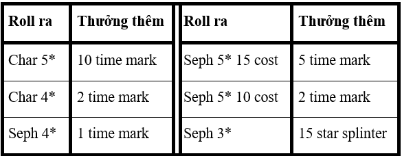
Những quà tặng kèm này sẽ trở thành tiền tệ trong 1 shop mới.- Shop Star splinter 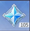 reset hàng tháng, Star shard có thể đổi tim hồng, thẻ gold, thẻ exp, guru food, hộp essence tự chọn, gemstone 3* và 4* random, các hộp đồ transcend
- Time mark 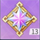 có thể đổi vô hạn, đổi được tim vàng, tim hồng, gemstone 5* random, mảnh char, các set ngành của những em 4* (cực kì mạnh, nên tích để lấy)
5. Cơ chế khắc hệ
 ), Băng ( ),
Ma ( 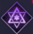 ), Phong ( 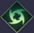 ),
Lôi ( 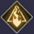 ), Quang (
), Băng ( ),
Ma ( 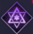 ), Phong ( 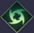 ),
Lôi ( 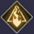 ), Quang (  )
và Ám ( 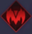 ). Những hệ này tồn tại ở cả Spirit và cả boss, crep trong các map.
)
và Ám ( 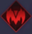 ). Những hệ này tồn tại ở cả Spirit và cả boss, crep trong các map. - Mỗi Spirit sẽ gây một loại dmg hệ cố định. Boss sẽ có khiên hệ chặn dmg hệ, khiên này rất dày nên khắc hệ là một thứ không thể bỏ qua.
- Bảng khắc hệ trong game trông nó như thế này:
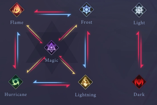
 : Gây thêm 25% dmg lên máu boss
: Gây thêm 25% dmg lên máu boss
: Gây thêm 12,5% dmg lên máu boss
: Gây ít hơn 25% dmg lên máu boss
Chi tiết hơn thì mời các bạn xem bảng dưới đây
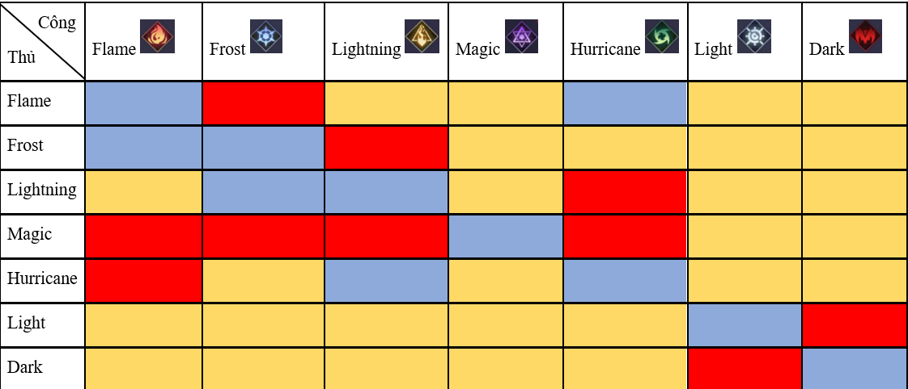
Trong đó :
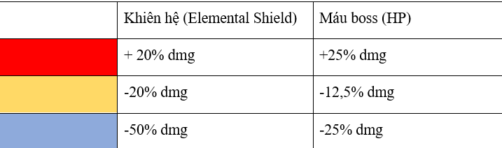